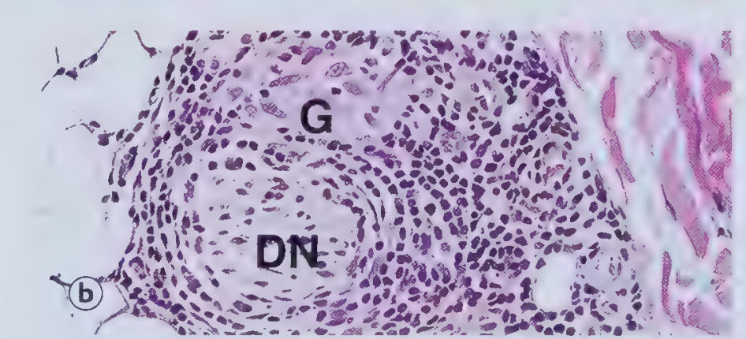

Granuloma infiltrating dermal nerve. Non-caseating granuloma with heavy lymphocytic cuffing wraps and destroys a small dermal nerve fascicle — the pathognomonic feature distinguishing leprosy from other granulomas.
Fig. 4.9
SCROLL TO COMPARE ↓
Real Plate vs. 3D Render
Fig. 4.9(b) — Nerve involvement (HP — High Power)
Real Plate3D Render

Granuloma (G) directly adjacent to and infiltrating a small dermal nerve (DN) — the pathognomonic feature.